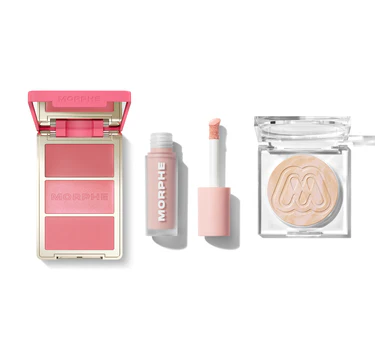
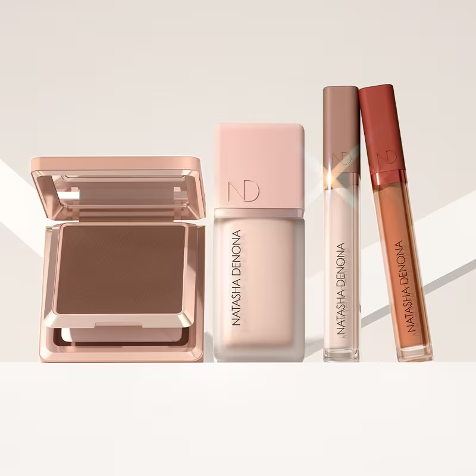
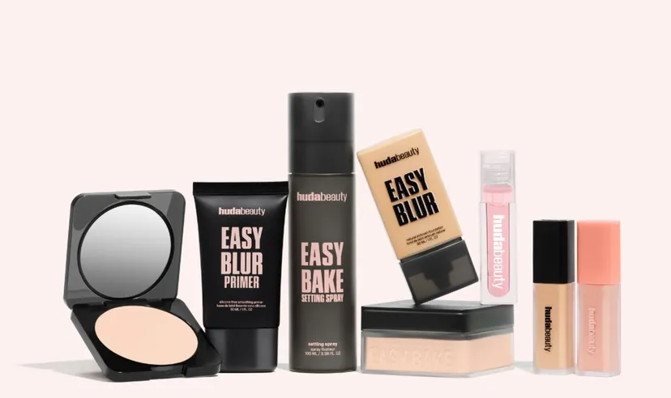
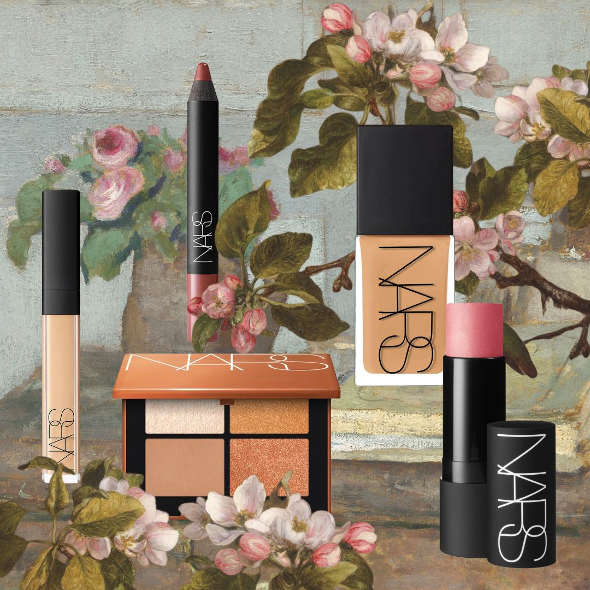
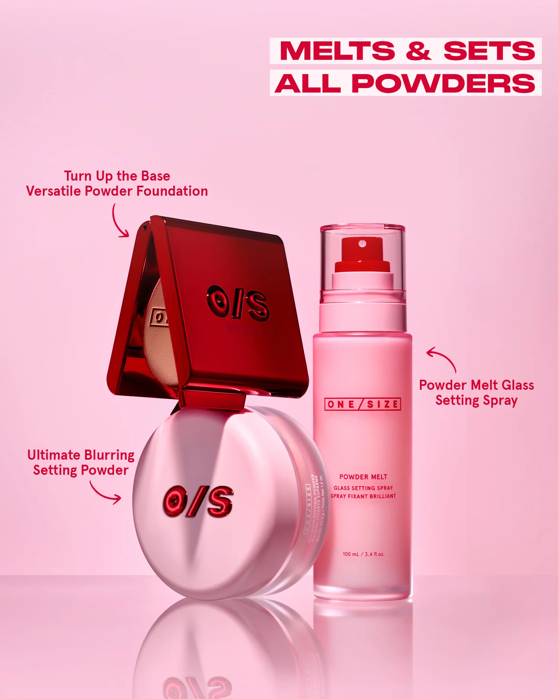
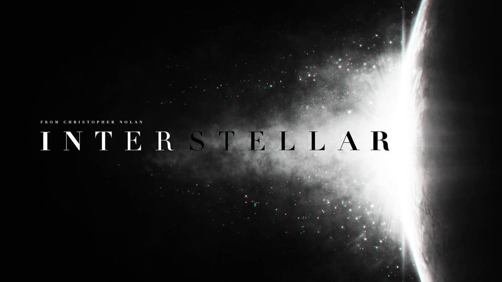
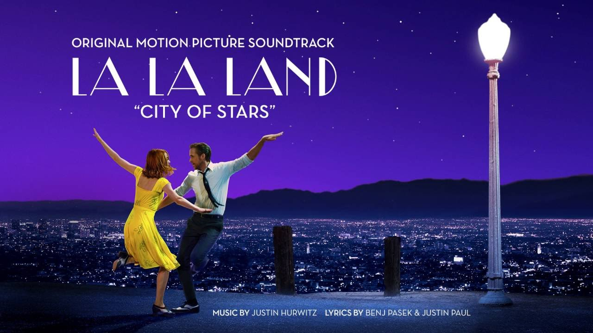
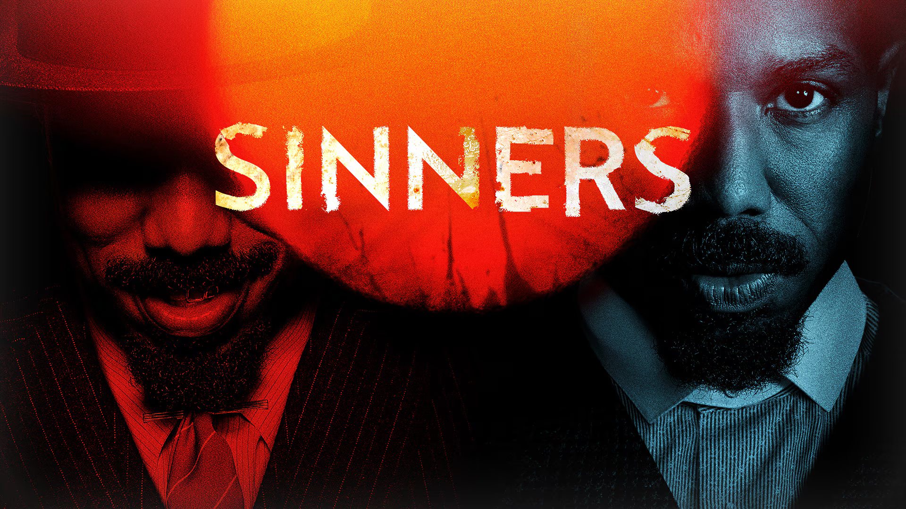
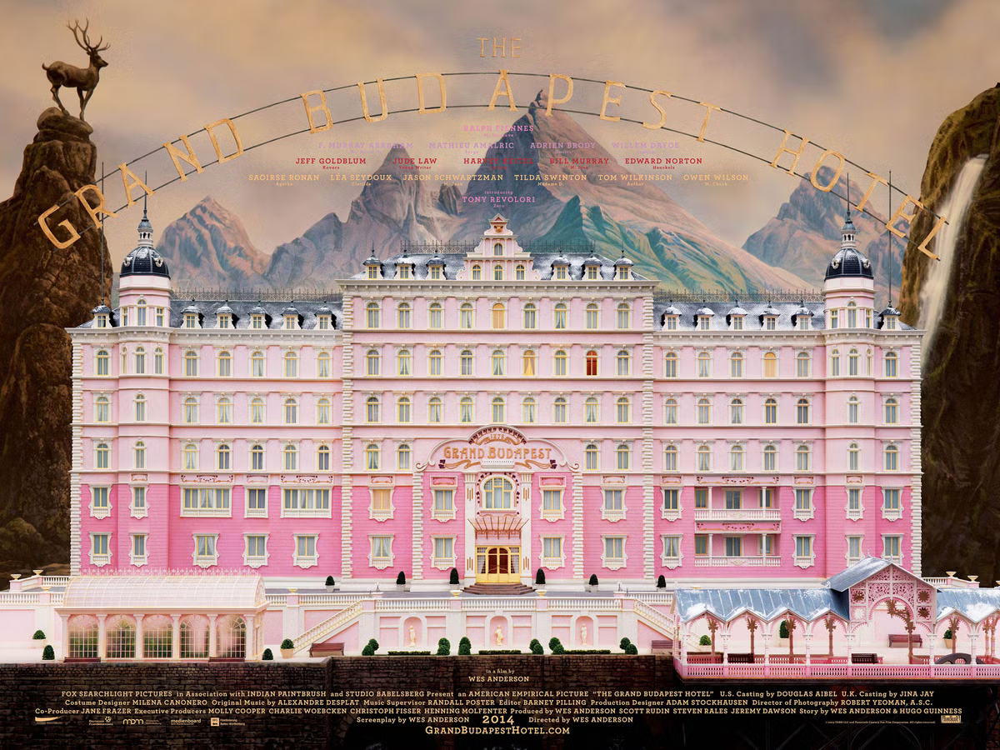

I work at a makeup store so I'm always surrounded by people asking me for my recomendations. Morphe is a really great and affordable brand! Natasha Denona has the best full coverage products. Huda Beauty is the absolute queen of setting powders. I love the lightweight feel of the Nars foundations. Honestly, everything from One Size is amazing. Makeup is something that I really enjoy and I love trying new products.

Intersteller is one of those movies that everyone says "You HAVE to see it!" and they're right! If you haven't seen Intersteller... what are you doing! Go watch it right now!! The cinematography is absolutely stunning. It's one of those movies that stay with you for a long time.

La La Land is my absolute favorite movie of all time. I love musicals and this one is just so good! it truly is a movie that you sit down to have fun and end up crying in the end. As many fans of this movie like to say "It's my favorite horror movie".

The intro to this film is completely top tier. You get the full experience of the classic DC universe. Although the beginning myight be a bit slow, it really picks up througout the film and by the end, you're gripping your seat with excitment.

Double the Michael B. Jordan? Consider me signed up! I love the acting in this movie. It's one of those films that will you give you chills. One of my favorite parts was the use of IMAX cameras in certain films. I love watching the aspect ratio change in films, like in the Hunger Games Catching Fire.

This is a truly wonderful and hilarious film. The colors, sets, and scenes are all so vibrant and whimsical. This film's storyline is so wild and all over the place where you never know what's coming next. If you miss a couple sections of this film, you might be lost but no worries, just enjoy the ride!